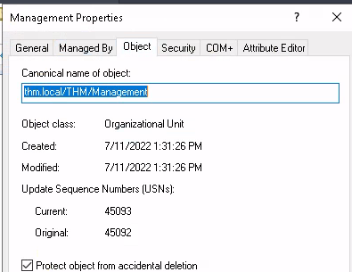

Active Directory Fundamentals
Introduction:⌗
Active Directory (AD) is a directory service developed by Microsoft that is used to manage and organize resources in a network. It provides a centralized database for managing and authenticating users, computers, printers, and other network resources within a Windows-based network environment. Active Directory is commonly used in enterprise environments to streamline network management and improve security.
A Domain Controller (DC) is a critical component of Microsoft’s Active Directory (AD) service. It serves as a central repository for user accounts, security policies, authentication, and other directory-related services in a Windows network environment. The primary role of a Domain Controller is to manage and maintain the Active Directory database, which includes information about users, groups, computers, and other network resources within a specific domain.
| Security Group | Description |
|---|---|
| Domain Admins | Users of this group have administrative privileges over the entire domain. By default, they can administer any computer on the domain, including the DCs. |
| Server Operators | Users in this group can administer Domain Controllers. They cannot change any administrative group memberships. |
| Backup Operators | Users in this group are allowed to access any file, ignoring permissions. They are used to perform backups of data on computers. |
| Account Operators | Users in this group can create or modify other accounts in the domain. |
| Domain Users | Includes all existing user accounts in the domain. |
| Domain Computers | Includes all existing computers in the domain. |
| Domain Controllers | Includes all existing DCs on the domain. |
To group users in one place that policies apply to all of them, create organizational unit on Active Directory Users and Computers. By default, Organizational Units are protected from being deleted, to enable deleting option, hover on view tab in Active Directory Users and Computers –> select Advanced Features. This will unlock the object feature located in properties of the OU that will allow you to turn off the protection.

Delegation:⌗
Delegation in the context of Active Directory refers to the process of assigning specific administrative tasks and responsibilities to non-administrative users or groups. It allows administrators to distribute management duties while maintaining overall control and security over the network environment. Delegation is particularly useful in large organizations where multiple individuals or teams need to manage specific aspects of the Active Directory infrastructure. Steps to add a Delegate control to a user:

When you add the permissions to the specified user, they will have the ability to use the given permissions or commands without needing administrator permissions. Example, using Phillip’s account to reset Sophie’s account password since she forgot her password using PowerShell. To reset the password:
Set-ADAccountPassword sophie -Reset -NewPassword (Read-Host -AsSecureString -Prompt 'New Password') -Verbose.
To reset force the user to reset their password on next login to prevent anyone else from knowing the password:
Set-ADUser -ChangePasswordAtLogon $true -Identity sophie -Verbose.
When you first create machines on AD they are stored by default on Computers container, it is recommended to separate machines depending on their job in different OUs. Types of OUs categories:
- Workstations are common devices in an Active Directory domain where users log in for work and browsing. Using privileged accounts for logging into workstations is strongly discouraged.
- Servers are the second most common devices in an Active Directory domain, providing services to users or other servers.
- Domain Controllers are essential components in an Active Directory domain, allowing for centralized management. They hold hashed passwords for all user accounts, making them critical and sensitive devices within the network.
Group Policy:⌗
Group Policy Objects (GPOs) are a powerful feature of Microsoft Windows operating systems that enable administrators to manage and control user and computer configurations in an Active Directory environment. GPOs define specific settings, policies, and preferences that apply to users and computers within a domain. These policies are applied in a hierarchical manner, allowing administrators to maintain consistent configurations and security settings across the network.
To customize Group Policies, you’ll start off by crafting a GPO within the Group Policy Objects section. Afterward, you can establish a connection between this GPO and the specific location where you intend the policies to take effect.
In the provided image above, we can observe the existence of 3 GPOs that have been generated. The Default Domain Policy and RDP Policy are buddies with the whole thm.local domain, while the Default Domain Controllers Policy hangs out solely with the Domain Controllers OU. Just a heads-up: any GPO you set up doesn’t just do its thing in the linked OU, but also in any baby OUs under it. So, even the Sales OU will catch some of that Default Domain Policy vibe.
The setting tabs of the any chosen Policy shows us actual GPO content and let us know what specific configurations it applies. To edit the policy configurations, right click the chosen policy –> Edit –> Computer/User Configurations.
GPO distribution involves using Group Policy Objects (GPOs) in Active Directory to centrally manage settings, security, and software for computers and users across a network. GPOs are typically distributed through something called the SYSVOL folder. It’s like a shared hub on domain controllers in our Active Directory setup. This special folder ensures that all our GPO stuff is available and the same across our whole domain.
Note:⌗
Once a change has been made to any GPOs, it may take some time for computers to catchup. You can force the change to update immediately by running the following command on Windows PowerShell:
gpudate /force.
To create and link specific configuration to specific groups, we can create a new GPO in the GPO directory, configure it and then drag and drop it in the groups we want to apply it too.
Authentication:⌗
When we are using AD, all credentials are stored in the Domain Controllers. Two major protocols use by windows are:
- Kerberos is a clever security protocol that lets systems verify their identities over networks without sharing passwords directly. It's all about using tickets and a Key Distribution Center to keep things safe from unauthorized access and eavesdropping.
- NetNTLM is one of those old-school authentication methods. It's been around for a while and was used in Windows to help users access network stuff without shouting out their passwords. But, just a heads-up, it's considered kinda outdated now.
Tree and Forest:⌗
Tree is a hierarchical structure of domains, with a root domain at the top, containing child and sub-child domains. This arrangement streamlines network management and resource organization.
Forest is a collection of interconnected Active Directory Trees, sharing a common schema and configuration, suitable for large organizations or collaborations among separate domains.